Раздел каталога
Меридианы
В этом разделе собраны отдельные акупунктуры и меридианы по категориям: Странник, Школа, Секта и Цзянху.
Мировые стартовые нейгуны
Странник
Пример меридиана
Странник
Сосредоточение духа и ци.
Игровые Характеристики
Меридианы великих школ
Школа
Основы Школ I
Старая вкладка со школами. Порядок в списке — сверху от Куньлуня и вниз до Тяньшаня.
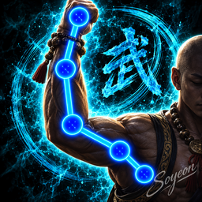
Куньлунь
[Рекомендуется как основной меридиан для учеников Куньлунь]. Образует меридиан Мудрости. Рекомендуется игрокам с внешним и внутренним уроном.
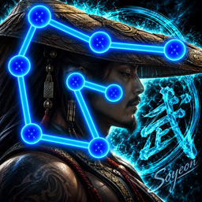
Город Наказаний
[Рекомендуется для учеников Города Наказаний]. Великий Меридиан Воли. Рекомендуется игрокам с внешним и внутренним уроном.
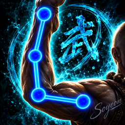
Змей
Без описания
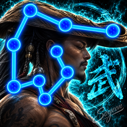
Блаженные
Без описания
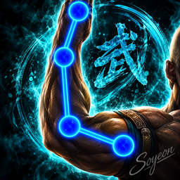
Нищие
Без описания
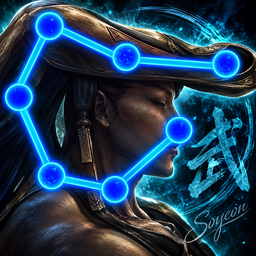
Удан
Без описания
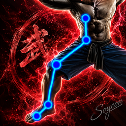
Ученые
Без описания
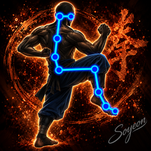
Тан
Без описания
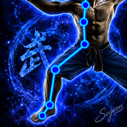
Лейб-Гвардия
Без описания
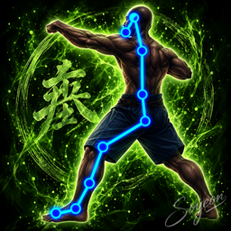
Шаолинь
Без описания
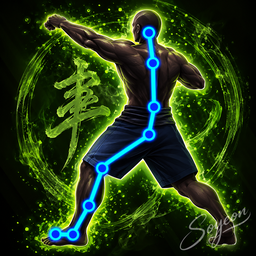
Культ Минг
Без описания
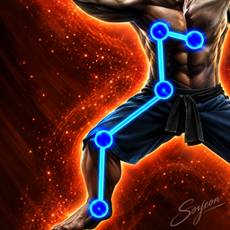
Тяньшань
Без описания
Основы Школ II
Святилище Шаманов. В эту вкладку будут добавляться следующие школы.
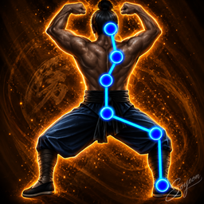
Святилище Шаманов
Без описания
Сектантские направления
Секта
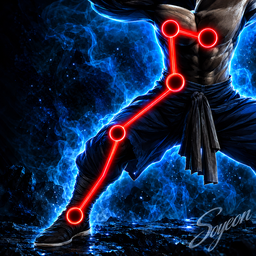
Дамба Няньло
Без описания
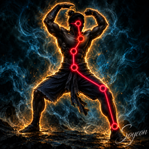
Секта Дхармы
Без описания
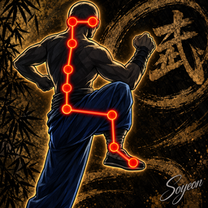
Кровавая Сабля
Без описания
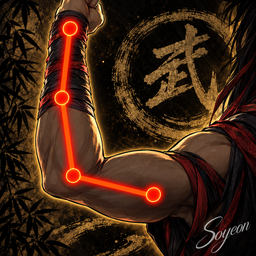
Морской Дворец Тианья
Без описания
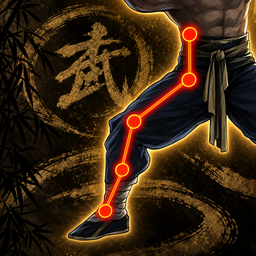
Гора Хуа
Без описания
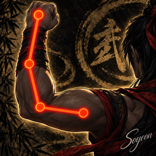
Дворец Святой Воды
Без описания
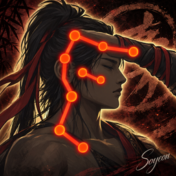
Лагерь Шеньчжи
Без описания
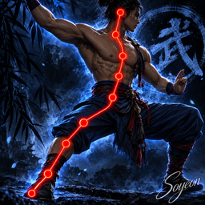
Древняя Гробница
Без описания
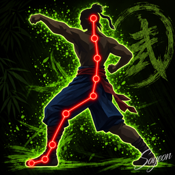
Мастерская Радости
Без описания
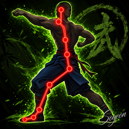
Павильон Звездного Неба
Без описания
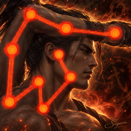
Конвой Чан Фэн
Без описания
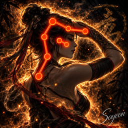
Пять Бессмертных
Без описания
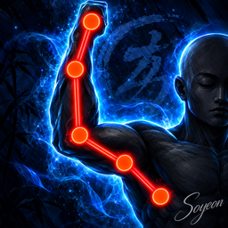
Остров Сияющих Надежд
Без описания
Мировые меридианы
Цзянху
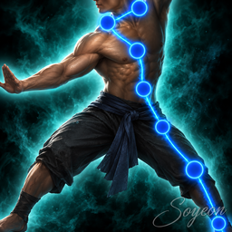
Цзянху Ян
Без описания
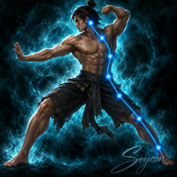
Высший Ян
Без описания
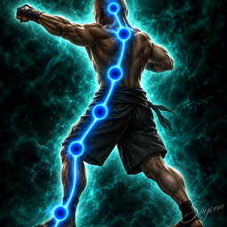
Война Школ
Без описания
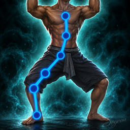
Цзянху Инь
Без описания
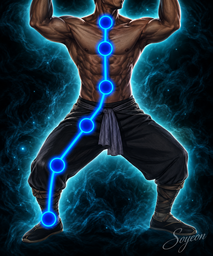
Высший Инь
Без описания
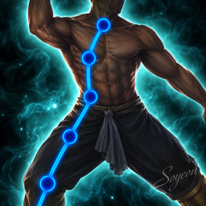
Меридиан Инь
Без описания
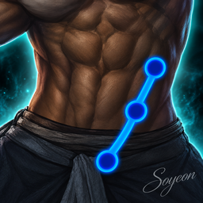
Поясной Сосуд
Без описания
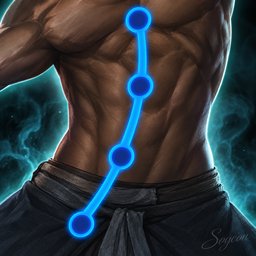
Подсолнух
Без описания